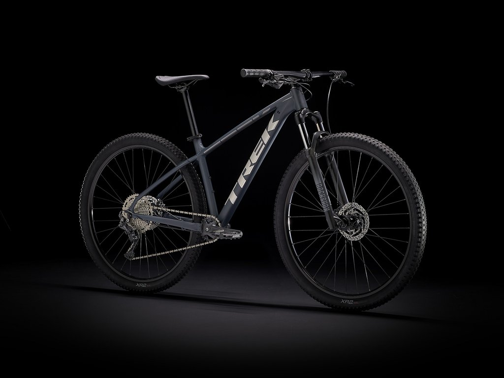

Dirt Jump
Solo llevan freno en la rueda de atrás.
Es necesario que éste sea de disco porque no se suele frenar mucho, pero cuando se precisa frenar es necesario que tenga una buena capacidad de frenada.
Las bicis de Dirt Jump solo tienen un plato y un piñón porque solo precisan de una sola velocidad, el plato suele tener entre 30 y 32 dientes y el piñón de 11 a 12. Generalmente esto se traduce en una velocidad media ya que es importante tener buena aceleración y velocidad entre saltos y en los planos.
Los pedales de clip no se usan en esta modalidad. Todas la bicis de Dirt Jump llevan pedales planos robustos y de aluminio o plástico con muchos pines para garantizar el grip cuando sea necesario pero también asegurar que los pies pueden quedar libres cuando se precise.
Las bicis de Dirt Jump solo llevan suspensión delantera y las horquillas suelen tener entre 80 a 110mm de recorrido, y el manillar suele tener una anchura de 710 a 770 milímetros.

Mbt Xc (crouss Country
La principal característica de las bicicletas Cross Country es que son muy ligeras. Por esta razón se practica con cuadros rígidos. Por otro lado, la velocidad que implica requiere de un buen sistema de frenado.